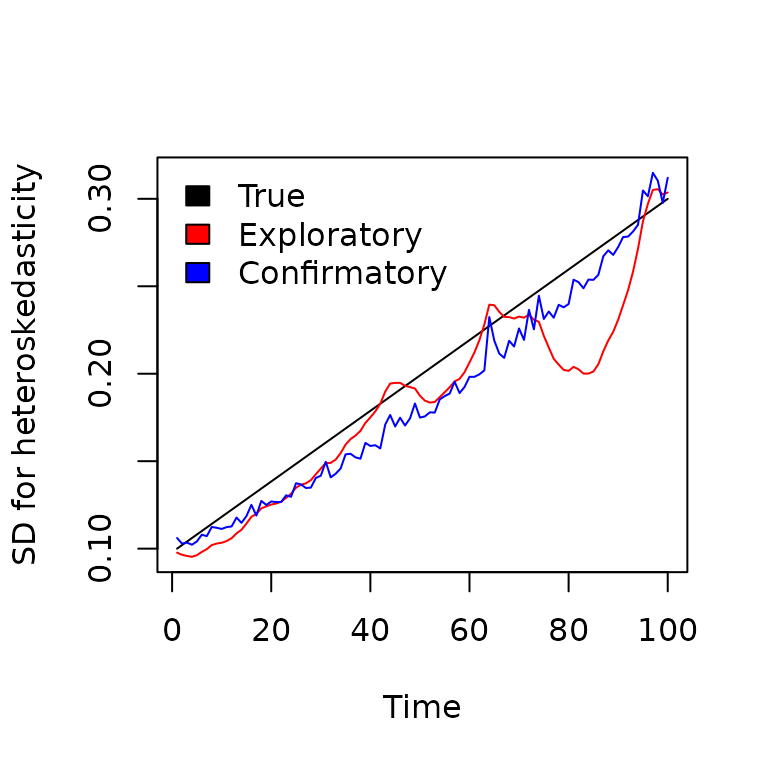

Multivariate Generalized Autoregressive Conditional Heteroskedasticity (MGARCH) models
dsem can be specified to estimate variation over time in
a parameter representing the magnitude of exogenous variance (i.e.,
two-headed arrow). This essentially allows dsem to function
as a Multivariate Generalized Autoregressive Conditional
Heteroskedasticity (MGARCH) model, while allowing missing values for
covariates that drive changes in variance.
To show this, we simulate three time-series of length, with no correlation but a steady increase in the standard deviation over time:
Exploratory MGARCH
We first fit this without any covariate. To do so, we specify a
latent variable F that follows a random walk with unit
variance. This variable the moderates the double-headed arrows
(representing the magnitude of exogenous variance) for each
time-series:
# Define data including latent factor for heteroskedasticity
dat = data.frame(
setNames( data.frame(eps_tc),letters[seq_len(n_vars)]),
F = NA
)
# Define SEM using F as latent moderating variable
sem = "
a <-> a, 0, F
b <-> b, 0, F
c <-> c, 0, F
F <-> F, 0, sdF, 0.1
F -> F, 1, NA, 1
"
# exploratory fit
fit1 = dsem(
tsdata = ts(dat),
sem = sem,
estimate_mu = colnames(dat),
control = dsem_control(
use_REML = FALSE,
gmrf_parameterization = "full",
logscale_moderating_variance = TRUE,
quiet = TRUE
)
)
# Inspect estimates
summary(fit1)
#> path lag name start parameter first second direction Estimate Std_Error
#> 1 a <-> a 0 F NA 0 a a 4 NA NA
#> 2 b <-> b 0 F NA 0 b b 4 NA NA
#> 3 c <-> c 0 F NA 0 c c 4 NA NA
#> 4 F <-> F 0 sdF 0.1 1 F F 2 0.07221498 0.0252122
#> 5 F -> F 1 <NA> 1.0 0 F F 1 1.00000000 NA
#> z_value p_value
#> 1 NA NA
#> 2 NA NA
#> 3 NA NA
#> 4 2.864287 0.004179491
#> 5 NA NAThe model has a nonzero estimate of sdF representing the
variance over time in heteroskedasticity (in log-space), suggesting that
the model detects the heteroskedasticity.
Confirmatory MGARCH
Alternatively, we might specify a covariate that is hypothesized to drive heteroskedasticity. In this case, we simply specify a trend over time as covariate, and estimate its impact on the latent moderating variable. To avoid confounding between the random-walk for the latent variable and the trend covariate, we also remove the random-walk from the latent factor. Finally, we randomly simulate missing data in the covariate, to show that the MGARCH can still accomodate data that are missing at random:
# Define data including latent factor for heteroskedasticity and covariate
dat = data.frame(
setNames( data.frame(eps_tc),letters[seq_len(n_vars)]),
F = NA,
slope = scale( seq_len(n_times), center = TRUE, scale = TRUE )
)
# Randomly simulate 10% missing data for covariate
dat$slope[ sample(seq_len(n_times), n_times/2) ] = NA
# Define SEM using F as latent moderating variable
# and slope as covariate for F
sem = "
a <-> a, 0, F
b <-> b, 0, F
c <-> c, 0, F
F <-> F, 0, sdF, 0.1
slope <-> slope, 0, sd_slope
slope -> slope, 1, NA, 1
slope -> F, 0, beta
"
# confirmatory MGARCH
fit2 = dsem(
tsdata = ts(dat),
sem = sem,
estimate_mu = colnames(dat),
control = dsem_control(
use_REML = FALSE,
gmrf_parameterization = "full",
logscale_moderating_variance = TRUE,
quiet = TRUE
)
)
# Inspect estimates
summary(fit2)
#> path lag name start parameter first second direction
#> 1 a <-> a 0 F NA 0 a a 4
#> 2 b <-> b 0 F NA 0 b b 4
#> 3 c <-> c 0 F NA 0 c c 4
#> 4 F <-> F 0 sdF 0.1 1 F F 2
#> 5 slope <-> slope 0 sd_slope NA 2 slope slope 2
#> 6 slope -> slope 1 <NA> 1.0 0 slope slope 1
#> 7 slope -> F 0 beta NA 3 slope F 1
#> Estimate Std_Error z_value p_value
#> 1 NA NA NA NA
#> 2 NA NA NA NA
#> 3 NA NA NA NA
#> 4 0.10617048 0.112550326 0.9433156 3.455195e-01
#> 5 -0.04800428 0.004794621 -10.0121119 1.348428e-23
#> 6 1.00000000 NA NA NA
#> 7 0.32588875 0.046440238 7.0173790 2.260688e-12The model has a positive estimate of beta, indicating
that it attributes some portion of heteroskedasticity to the
hypothesized covariate.
Comparison
We can then plot these estimated variances against the true (simulated) value
# Bundle true and estimated time-series
Y = cbind(
True = sigF_t,
exp(predict(fit1)[,4]),
exp(predict(fit2)[,4])
)
#
matplot(
x = seq_len(n_times), y = Y, type = "l", lty = "solid",
col = c("black","red","blue"), xlab = "Time",
ylab = "SD for heteroskedasticity"
)
legend( "topleft", fill = c("black","red","blue"), bty = "n",
legend = c("True", "Exploratory", "Confirmatory"))
As expected, using a covariate improves the estimated heteroskedasticity even in the presence of missing data.
Runtime for this vignette: 3.41 secs